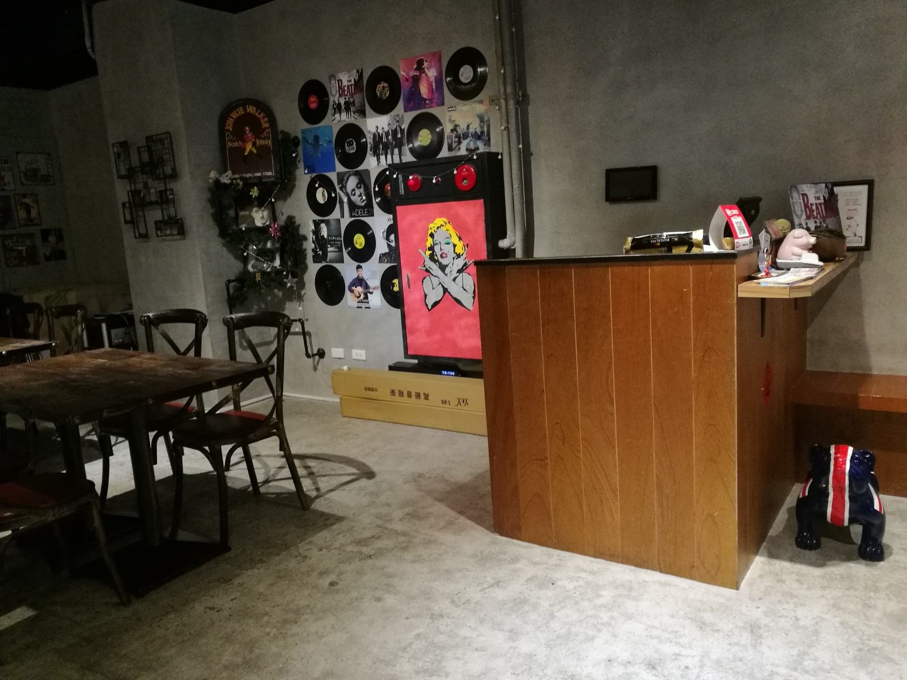
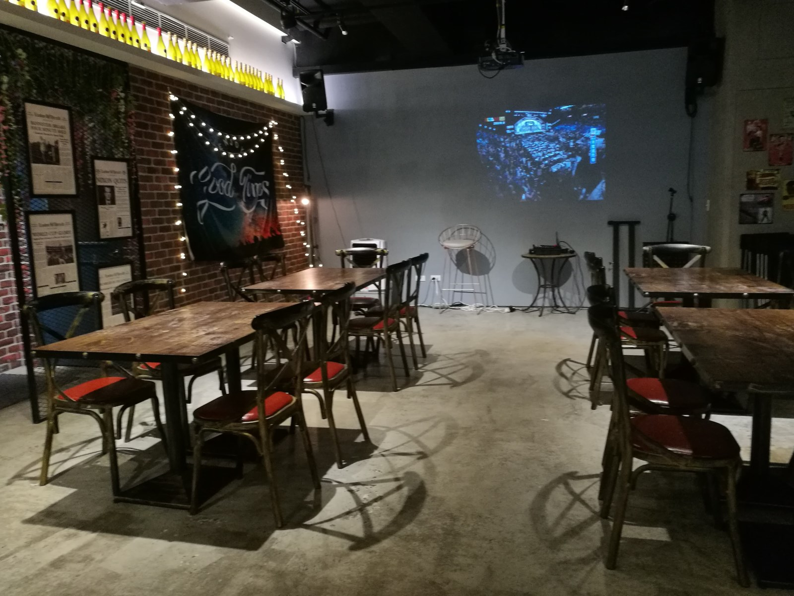

[三峽] 小聚餐酒館
| 餐廳名稱: | 小聚餐酒館 |
|---|---|
| 地 址: | 新北市三峽區國際一街3號2樓 |
| 營業時間: | 週日~週四 11:30 - 15:00 17:30 - 22:00 |
| 週五~週六 11:30 - 15:00 17:30 - 00:00 |
去角板山玩，決定中午在三峽用餐，本來要重回一間吃過一次且印象不錯的餐廳， 偏偏在熱門時段到達，沒有空位。只好利用 Google Map 搜尋附近高分的餐廳， 就找到這間 小聚餐酒館。
按照地址找到後，才注意到是2樓，餐館開在二樓，又還能存活，想必是有些過人之處，
就走上去了。

樓梯就有些布置了，還行。
牆壁上有今日特餐，至於完整菜單，請看小聚餐酒館 官網菜單。
入口處的結帳櫃台。 
看他的官網，似乎晚上常常有表演，可能這是他的生存之道。附帶一提，這家店不提供Wi-Fi給客人，只有他們的點餐系統自己用。 大概是為了讓更多的客人看表演吧。 
餐酒館當然要賣酒啦。
廚房。
名片是一隻小豬，挺有趣的。
今天沒很餓，只點個雙人套餐。兩碗湯最先送上，很正常的奶油蘑菇濃湯，還不錯喝。
套餐的 特調水果茶。
焗烤田螺，不是我吃過最好吃的，不過也可以了啦。

炙燒鴨胸佐胡麻醬 沙拉，味道OK。

波隆那牛肉醬水波蛋，個人不喜紅醬，喜歡番茄的大概會愛吧。

漁夫海鮮總匯 Pizza，有一個優點是似乎都沒帶殼的海鮮，可以輕鬆吃。
飯後甜點，忘記味道了，應該是還不錯吧。
北大特區這邊漸漸地繁榮了，有許多大型住宅，商店應該也歷經幾代了，能存活的店應該都不錯。 這一帶除了大型住宅之外，所幸還有一些空地弄成私人停車場，停車還算方便。 可以多來這區晃晃，多挖掘一些優秀的店。